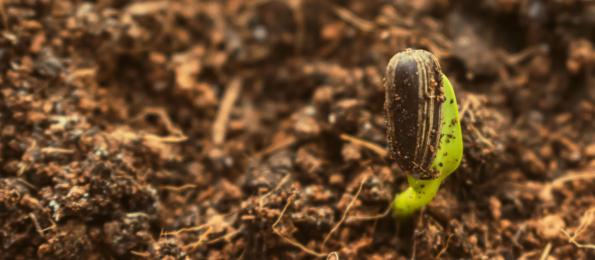

Tout commence par une graine.
Oignon, tomate, chou et piment en sachets de 5 g. Livrés à Dakar en 24 à 48 h, avec la fiche de culture.
Octobre
Lancez vos pépinières de saison sèche.
Oignon, tomate, chou et piment se sèment tous en pépinière à partir d'octobre. Préparez vos planches à l'ombre et repiquez 4 à 8 semaines plus tard selon l'espèce.

Avant l'ensachage
Chaque lot est mis à germer avant d'être ensaché.
Au dos du sachet, un QR code ouvre la fiche de culture de la variété.
Une question sur vos cultures ?
L'équipe répond sur WhatsApp, en français et en wolof.
Comment ça marche
-
1
Choisissez vos sachets
- Chaque lot est testé en germination
-
2
Recevez-les chez vous
- 24 à 48 h à Dakar, 3 à 5 jours en région
- Wave, Orange Money ou à la livraison
-
3
Cultivez avec la fiche
- QR code au dos du sachet
Voir les semencesOignon, tomate, chou ou piment, en sachets de 5 g.
On vous appelle pour confirmer, puis on livre.
Semis, repiquage, arrosage et récolte, étape par étape.